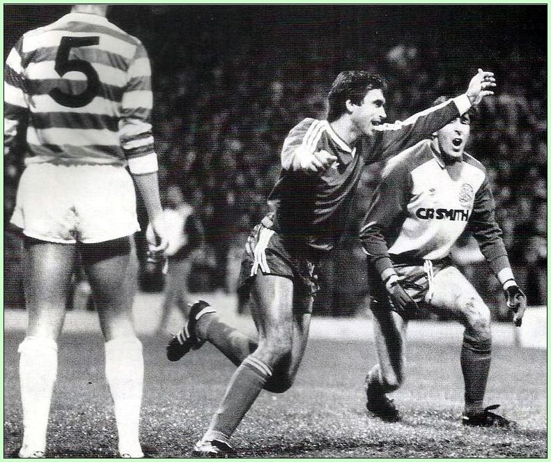

Золоті імена
Вадим Євтушенко
Він забивав у фіналі Кубка кубків, виступав на фінальному турнірі чемпіонату світу, вважався найкращим «джокером» європейського футболу та має в доробку золоті медалі й кубки СРСР та Швеції. Вже як тренер, має досвід роботи в збірній України та клубі, який став рідним. Зразок ввічливості, інтелігентності та професіоналізму – Вадим Євтушенко.
- Народився 1 січня 1958 року в місті П'ятихатки, що на Дніпровщині, в родині службовців.
- Вступаючи в Київський інфіз, отримав оцінку «незадовільно» з профільного предмету – футболу. О, яка іронія – стосовно майбутнього заслуженого майстра спорту!
- Ще школярем Вадик був настільки авторитетним, що йому довірили повезти команду своєї школи на змагання «Шкіряного м’яча» в якості тренера!
- Не вступивши в вуз, підтримував форму у команді сусіднього міста – Вільногірська, влаштувавшись працювати на місцевий комбінат.
- Вищу освіту здобув у Кіровоградському педінституті. Саме Кропивницький зіграв визначальну роль у футбольному житті Євтушенка – як і Веремеєва, Михайлова, Поркуяна, Михайленка, Канчельскіса.
- Юний Євтушенко виступав у змаганнях добровільного спортивного товариства «Буревісник», але через півтора роки потрапив у поле зору місцевої команди майстрів – «Зірки», де й почав свої організовані виступи.
- У сезоні 1979 року, граючи на різних точках атаки, Вадим Євтушенко забив за «Зірку» 11 м’ячів і привернув увагу відразу кількох колективів Вищої ліги. Але навіть не міркував над іншими пропозиціями, сказавши: «Тільки «Динамо» (Київ)!
- Помітив Вадима легендарний динамівський селекціонер Анатолій Сучков. Їхав на друголіговий матч у Чернівці, щоб переглянути Віктора Хлуса, а захопив ще й автора переможного голу – якраз Вадима Євтушенка із «Зірки»!
- 22-річний новачок із Другої ліги дуже переживав, а Валерій Васильович, як на зло, нічого не говорив про його гру: на зборах і не хвалив, і не корив. Як виявилося, Лобановський уже бачив Євтушенка в побудовах команди, а тому нічого більше говорити було не треба!
- У «Динамо» Євтушенко став 5-разовим чемпіоном і 3-разовим володарем Кубка СРСР. Виграв Кубок кубків. Зіграв 245 матчів (59 голів). Був одним із гравців із постійною ігровою практикою.
- Втім, у якийсь момент Вадим проявив особливу здібність – значно посилювати гру, виходячи на заміни. Завдяки цьому Євтушенко забив не один десяток м’ячів «із лавки» – в тому числі, й третій у ворота «Атлетико» в трофейному матчі Кубка кубків 1986 року.
- Уявіть собі: уже граючи за кордоном, Євтушенко знайшов відеокасету із записом матчу «Динамо» – «Атлетико» із шведським коментарем. І там коментатор сказав про нього такі слова: «А ось на полі з’явиться Вадим Євтушенко, найкращий у Європі гравець, що виходить на заміни!».
Вадим Євтушенко був технічним гравцем із високою швидкістю та гольовим чуттям. Під час своєї кар’єри у вищих дивізіонах забив біля 120 м’ячів – серед них і ударами через себе, і п’ятою. За «ненашівське» поводження з м’ячем його нерідко називали в СРСР «бразильцем».
Віддавши «Динамо» найкращих дев’ять років своєї кар’єри, Євтушенко зважився на рішучий крок – і перейшов у «Дніпро», звідки в Київ якраз перебралися Литовченко з Протасовим. Мотивація – суто футбольна: хотілося більше ігрової практики, а також грати не на не улюбленій позиції крайнього півзахисника, куди Вадима почали ставити після травми Яремчука.
І треба ж такого: за підсумками сезону 1988 року «Динамо» не виграло золоті медалі, а Євтушенко став чемпіоном СРСР!
Після зоряного сезону 1986 року до динамівців проявляли інтерес клуби зі всього світу. Вадим Євтушенко, зокрема, міг опинитися в Австрії ще до Блохіна – кликав віденський «Рапід». Також запрошували у Мексику, де ще не бувало радянських легіонерів.
У Швеції цікавився «Хаммарбю». Але найбільш конкретними і наполегливими виявилися скаути АІКа. Сума контракту склала, за неофіційними даними, біля півмільйона шведських крон (щось близько 100 тисяч доларів США).
На той час АІК виступав не найкращим чином – роком раніше був за одне очко від вильоту. Але із Євтушенком у складі шведський гранд досягнув своєї мрії: вперше за 55 років став чемпіоном своєї країни!
Футбол у Швеції на той час був напівпрофесіональним, атлетичним, спрямованим на довгі передачі та боротьбу. Технічний українець навіть у «передветеранському» віці став справжньою зіркою АІКа!
За п’ять сезонів у клубі Сольни Євтушенко у 143 матчах забив 38 м’ячів, 15 з яких – у чемпіонському сезоні 1992 року. Вадим був кумиром фанів клубу!
На той час у шведському законодавстві існувало правило, згідно з яким іноземець не міг отримати робочу візу більш як на 48 місяців. Євтушенко повинен був покинути Швецію. Але протести фанатів АІКа та гнівні статті преси призвели до того, що парламентарі та урядовці внесли спеціальну поправку, яка дозволяла залишати спортсменів і тренерів і після цього терміну. Цей юридичний прецедент у Швеції називається «законом Євтушенка»!
Догравав видатний динамівець у клубі «Сіріус» (Упсала), а потім розпочав у Швеції й тренерську роботу. Працював у штабах клубів «Реймерсгольм», «Ярфалла» і «Хаммарбю», очолював клуб «Валста Сіріанска» – що було величезним досягненням, адже консервативний шведський футбол не схвалював іноземців на постах головних тренерів.
Остання перемога
У перший день нового року для Віталія Миколенка відкрився новий етап у кар'єрі - київське «Динамо» та англійський «Евертон» домовилися про трансфер захисника, який підписав із ліверпульським клубом контракт терміном на 4,5 роки.
У складі «Динамо» 22-річний оборонець провів 132 поєдинки в офіційних турнірах, ставши чемпіоном України сезону 2020/21, дворазовим переможцем національного Кубка (2020 та 2021 рр.) та триразовим володарем Суперкубка України (2018, 2019, 2020 рр.).
Окрім того, в активі молодого захисника 21 гра за національну збірну України, у тому числі - у фінальному турнірі Євро-2020, в якому «синьо-жовті» дійшли до чвертьфіналу.
Київське «Динамо» дякує Віталію за віддані нашій команді роки, протягом яких він став одним із лідерів «біло-синіх», та бажає подальшого прогресу та нових кар'єрних успіхів і перемог.
Найближчим часом очікуйте на нашому каналі великий випуск із Віталієм Миколенком!